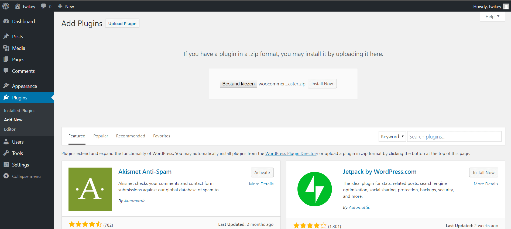
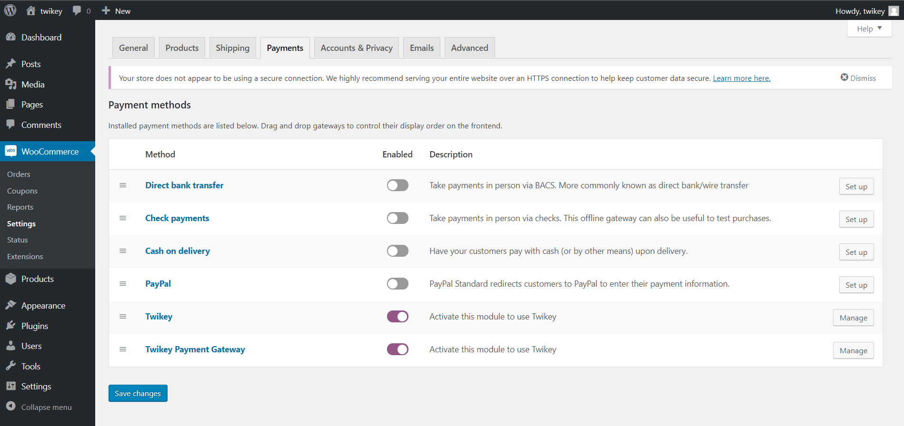
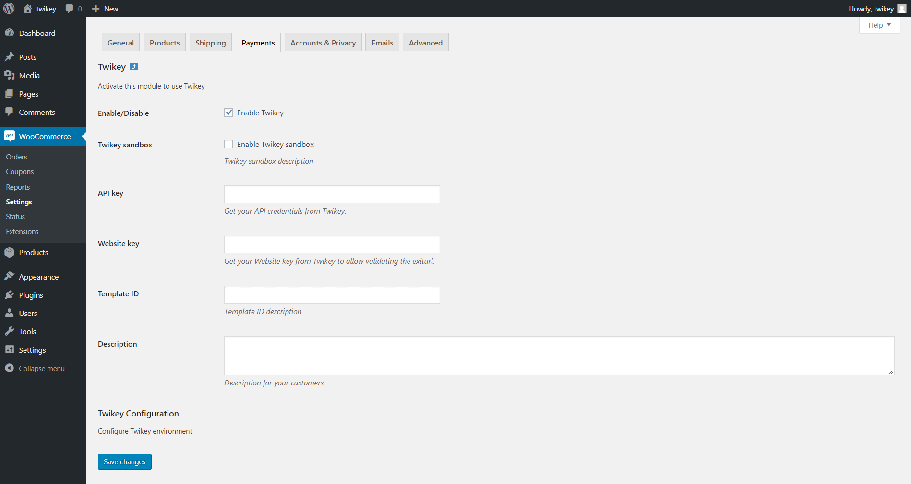
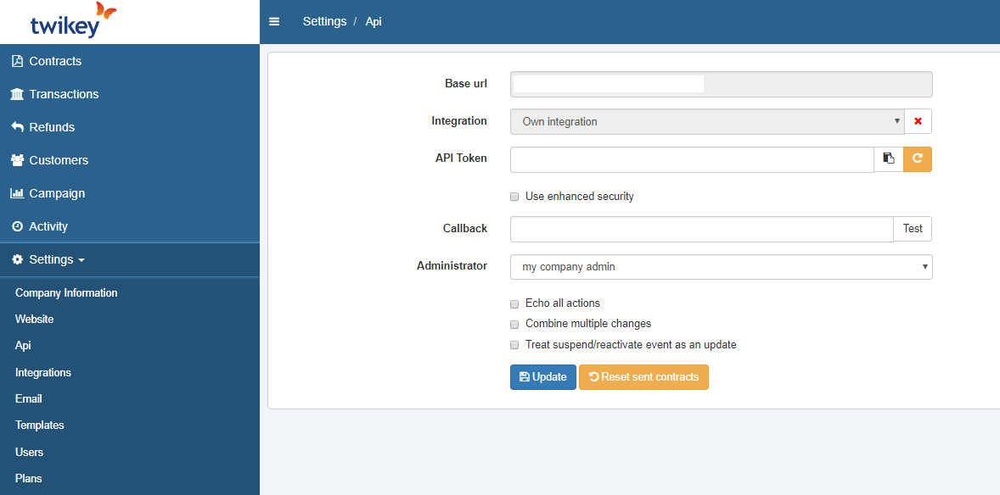
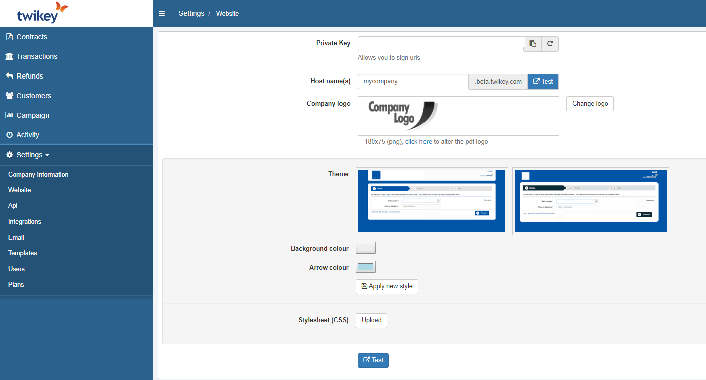

Want to allow your customers to pay in the most convenient way, then Twikey is right what you need.
Recurring or occasional payments via SEPA electronic Direct Debit mandates, for WooCommerce
Twikey offers a simple and safe multichannel solution to negotiate and collect recurring (or even occasional) payments. Twikey has integrations with most accounting and CRM packages. It is the first and only provider to operate on a European level for Direct Debit and can work directly with all major Belgian and Dutch Banks. Nevertheless, you can use the payment options of your favorite PSP to allow other customers to pay as well.
Features
The Twikey WooCommerce plugin can be used in combination with the WooCommerce subscription plugin as well as in standalone mode to handle subscriptions right from within Twikey.
Demo

Installation & Configuration
Step 1 : Download the plugin
Step 2 : Install the plugin
Within your WordPress environment, choose “Plugins > Add New > Upload Plugin” and upload the zip. Activate the plugin.

Step 3 : Activate the plugin
Configure the plugin in “WooCommerce > Settings > Payments”. Activate both Twikey methods and click on “Manage".

Step 4: Plugin configuration
- Enable Twikey Sandbox for testing via Twikey Beta
- Fill in the API key (see step 5)
- Fill in the Website key (see step 6)
- Fill in the Template ID (see step 7)
- Fill in the Description for your customers

Step 5: Api key [Twikey]
The API key allow you to talk to our API.
- Via Settings > API
- API token = API key for plugin
- For timely order updates use {your wordpress url}/?wc-api=twikey_webhook

Step 6: Website key [Twikey]
The website key allows the plugin to verify that incoming requests are coming from us. This is only available in the old GUI. Switch to it by selecting your name in the op right corner and selecting "Old Interface".
- Via Settings > Website
- Private key = website key for Plugin

Step 7: Choose your template
- Via Settings > templates
- Choose the template number you want to connect to your WooCommerce store.
- For proper checkout, use your Twikey template: {your url}/wc-api=twikey_exit&mndt={0}&status={1}&s={3}&t={4} as exit url. on the Twikey profile under Interaction

Step 8
Repeat steps 4 to 7 for the Payment Gateway plugin.